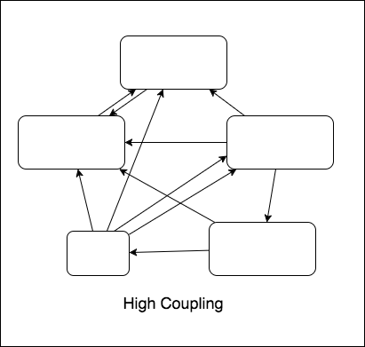

Software Complexity
Estimate
| Feature 1: | $ t_1 $ | ||
| Feature 2: | $ t_2 $ | ||
| Feature 3: | $ t_3 $ | ||
| ... | |||
| Feature n: | $ t_n $ | ||
| Total: | $\sum t$ | + | Buffer |
Actual
| Feature 1: | $ t_1 $ | ||
| Feature 2: | $ t_2 $ | + | $\Delta_1 $ |
| Feature 3: | $ t_3 $ | + | $\Delta_2 $ |
| ... | |||
| Feature n: | $ t_n $ | + | $\Delta_{n-1}$ |
| Total: | $\sum t $ | + | $\sum \Delta$ |
| Total Estimate: | $\sum t$ | + | Buffer |
| Total Actual: | $\sum t$ | + | $\sum \Delta$ |
$\Delta$ is:
- Very hard (or impossible) to measure
- Accumulate through time
- Make every work less efficient
Software Complexity
Software Entropy
Technical Dept
- From customers
- From developers
- ...


Bad
Better
Loose coupling
- Easier to maintain (fix bug, update/replace module)
- Able to run task in parallel
- Lesser integration time

Bad
Better
Client-side ------------- Server-side
High cohesion
- Easier to read and understand
- Easier to navigate
Project structure
- modules
- user
- actions
- components
- reducers
- services
- index.js
- product
$\And$
Abstraction

Repetitive/boilerplate code
| PROS | CON |
|---|---|
| Loose coupling | Repetitive task |
| Low cohesion | |
| Used known API | Much boilerplate |

Reused/Abstracted code
| PROS | CON |
|---|---|
| Less repetitive code | Tight coupling |
| Low cohesion | |
| Can be more verbose | Can be less verbose |
function lowCohesionFunction(param1, param2, param3, param4, ...){
if (...){
[...]
} else if (...){
[...]
} else if (...){
[...]
}
}
Repeat or not repeat ?
Abstract or not abstract?
Advice
- In React: Reuse component should be compact.
- Abstraction should have documentation and clear APIs
- Reused code should be unit tested
| Test X only | Test A, B then X | |
| Test cases: | $5 \times 5 = 25$ | $5 + 5 + 2 = 12$ |
Other examples:
- Schedule
- Geolocation
$\rightarrow$ save time.
function handleData(data){
if (/*...*/){
// ...
}
if (/*...*/){
// ...
}
return data
}
function handleData(data){
doSomethingFirst(data)
doSomethingSecond(data)
return data
}
function doSomethingFirst(data){ /*...*/ }
function doSomethingSecond(data){ /*...*/ }
function someWhereInTheApp(){
//...
callSupperBuggyAndHighlyReusedFunction()
//...
}
npm test
Summary
- Loose coupling, high cohesion
- DRY and abstraction (?)
- (Unit) Test
- ...